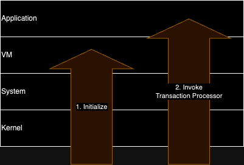

What is Radix Engine?
Radix Engine is a deterministic, transaction-based state machine that updates ledger state by incrementally executing transactions.
Radix Engine was built out of the lack of Blockchain VMs specifically optimized for a DeFi shared computing environment in terms of usability, security, performance, and modularity.
Unlike the EVM and other blockchain VMs, Radix Engine:
- Is Object-Oriented and Type-Safe
- Enforces move/ownership semantics
- Has the ability to add system plugins to extend system functionality
Architecture
Radix Engine is organized into 5 layers. Each layer has specific responsibilities and provides an API to the layer above. Middle layers also provide a Callback API which the layer above must implement.
| Layer Name | Layer ID | Responsibilities |
|---|---|---|
| Application | 5 | Defines Blueprint Application Logic |
| VM | 4 | Executes Application Code |
| System | 3 | Defines Actor abstraction (Memory Protection) Defines Package, Blueprint, Object abstractions Defines System Standards such as Authorization and Versioning |
| Kernel | 2 | Defines Node, Partition, Substate abstractions Maintains Call Frame Stack Maintains Ownership/Reference invariants |
| Database | 1 | Defines PartitionKey, SortKey abstractions |
Application Layer
The application layer is responsible for defining high level logic which manipulates objects and produces events for the eventual use by off-ledger systems such as wallets and DApps.
Implementation
An application is implemented by publishing a Package, which contain zero or more Blueprints. Each blueprint defines object type information and logic which can create, manipulate and destroy objects of that blueprint type.
Object Model
Unlike Ethereum where the ledger state is a flat mapping between addresses and account states, Radix Engine organizes its state into a forest of objects, each of which has a blueprint type. Child objects are exclusively owned by its parent in the tree hierarchy. Each root object is assigned a global address.

Blueprint Id
Every object is associated with a blueprint id which consists of
<package_address> + <blueprint_name>. A blueprint id uniquely identifies the
blueprint of an object.
Outer Objects
Objects which are Inner Blueprints will have an associated Outer object of a given outer Blueprint. Objects of an Inner Blueprint may directly access the state of its outer object avoiding invocation and new call frame overhead + costs.

Features
An object's features describes optional features an object may have. An object's features must be a subset of the total features defined in a blueprint.
Generic Substitutions
If an object's blueprint defines generic arguments then these are replaced with the type specified in an object's generic substitutions list.
Object Modules
The system may define additional state/logic to be stored per globalized object known as an Object Module.
An Object Module itself has a Blueprint type along with associated logic to manipulate the state of the object module.
Currently, there exists three object modules:
- RoleAssignment (Required)
- Metadata (Required)
- Component Royalties (Optional)
Blueprint
A Blueprint is the Radix Engine equivalent of Classes/Types in Object-Oriented Languages. It acts as a type identifier for an object and describes shared properties of all objects of that blueprint such as function/method interfaces.
Each blueprint has a unique name within its package and are globally identifiable by
<package_address> + <blueprint_name>.
Inner and Outer Blueprints
NOTE: Inner Blueprints are currently only available for use by native packages.
A blueprint may be specified as either an Outer or Inner Blueprint. Inner blueprints must specify an associated outer blueprint defined in the same package.

Inner blueprint objects may only be instantiated by an object of the associated outer blueprint.
Transience
NOTE: Transience is currently only available for use by native packages.
If a blueprint is specified to be transient, all objects of this blueprint cannot be persisted.
Features
NOTE: Features are currently only available for use by native packages.
Features provide a mechanism to express conditional execution and conditional stored state. The set of features to be used are specified per object on instantiation.
Features are identified by string.
Generics
NOTE: Generics are currently only available for use by native packages.
Generics to a blueprint may be specified which will then require an object instantiator to specify generic parameters during instantiation. Such a generic can then be used in defining function or state schemas.
Generics in a Blueprint are identified by index.
Fields
NOTE: Use of more than one Field, Field Conditions and Field Transience are currently only available for use by native packages.
A field is object state which gets loaded at once and maps to a single substate. A schema which describes what is in the data must be specified for every field.
Fields are identified by field index.
Field Condition
Fields may be conditionally included in an object depending on the features instantiated with that object. There are currently three options for field conditions:
| Name | Description |
|---|---|
| Always | Always include the field |
| IfFeature | Only include the field if a given feature is specified |
| IfOuterFeature | Only include the field if a given feature in the associated outer object is specified |
Field Transience
Fields may be specified to be transient. In this case, the field is never persisted. Instead, a default value is initially loaded on first read and may be updated over the course of a transaction. At the end of a transaction the field's value gets discarded.
Collections
NOTE: Collections are currently only available for use by native packages.
A collections is a set of data which can be read/loaded incrementally. There are currently three types of collections:
- Key-Value Collection
- Index Collection
- Sorted Index Collection
Collections are identified by collection index.
Events
Events may be emitted during runtime for off-chain processing. A schema which describes the data of every event type must be specified.
Events are identified by string.
Functions
Functions define executable logic.
A function signature is defined by an input/output schema as well as whether an object receiver must be specified.
Functions are identified by string.
Hooks
NOTE: Hooks are currently only available for use by native packages.
Hooks define logic which get executed when certain system events occur.
There are currently three types of hooks:
| Hook Name | Description |
|---|---|
| OnVirtualize | Called when a substate fault occurs on a virtual address of this blueprint type. |
| OnMove | Called when an object of this blueprint type is moved between call frames. |
| OnDrop | Called when an object of this blueprint type is dropped. |
Types
A blueprint may associate a schema to a name. This name can then be used externally to specify a schema defined by this blueprint.
Types are identified by string.
Blueprint Modules
The system may define additional state to be stored per blueprint known as Blueprint modules. If defined, every blueprint definition must initialize these modules.
Currently there exists two blueprint modules:
Type Checking
The Type Checking System checks that payloads coming from the application layer match the schema defined in the Blueprint. This includes:
- Object Fields/Collections
- Function Input/Output
- Events
The Type Checking System supports generics.

VM Layer
The VM Layer is responsible for providing the application layer a Turing-complete computing environment and the interface to the system layer interface.
Radix Engine currently supports two VM environments:
- A Scrypto WASM VM which exposes the system layer interface through WASM extern functions
- A Native VM which directly compiles applications with Radix Engine in the host's environment.

Implementation
The VM Layer is implemented by defining the System Callback Object, which requires two callback implementations:
initwhich is called on transaction bootup to initialize the vm layerinvokewhich is called on any function/method call
System Layer
The System Layer is responsible for:
- Defining Actor abstraction and memory protection
- Defining the Package/Blueprint/Object abstraction
- Maintaining a set of System Modules, or pluggable software, which extends the functionality of the system.
Implementation
The System Layer implements this by defining the Kernel Callback Object and using the kernel Node/Partition/Substate abstractions.
Kernel Layer
The kernel layer is responsible for:
- Defining the Node/Partition/Substate abstraction
- Defining the Call Frame abstraction
- Maintaining Ownership/Reference invariants
- Managing transaction state updates, which are to be subsequently committed to the database at the end of the transaction
Implementation
The kernel layer is implemented on top of the database layer's Partition Key and Sort Key abstractions.
Database Layer
The database layer is responsible for defining the partition-key / sort-key abstractions.
Implementation
The database layer is implemented on top of a key-value database.
Transaction Lifecycle
Radix Engine is a transactional state machine which accepts a transaction and a given state and outputs a state change.
radix_engine(State, Transaction) -> (StateChange, Output)
The state change can then be applied to the database to update it's state:
state_commit(State, StateChange) -> State
Three Stages
There are three stages in the transaction lifecycle:
- Bootup, which consists of initializing the layers of the stack
- Execution, which is the execution of the application logic specified by the transaction
- Shutdown, which consists of cleaning up each layer and creating the final StateChange and Output
Transaction Bootup
The initialization of a transaction execution consists of two steps:
- Initialize Stack
- Invoke Transaction Processor

Initialize Stack
Before a transaction is executed, initialization of the Kernel/System/VM stack occurs. During this initialization phase, configuration is loaded from the database and the state of each layer is initialized.
| Layer | Initialization Description |
|---|---|
| Kernel | Load Kernel version Check transaction references Create Initial Call Frame |
| System | Load System module configurations Verify transaction has not been previously executed Verify transaction is valid within epoch bounds Initialize enabled System Modules |
| VM | Load Scrypto VM version |
Invoke Transaction Processor
Once the entire stack has been initialized along with the initial call frame, an invocation of a
well-known blueprint, TRANSACTION_PROCESSOR, is made with the arguments specified in the transaction.
From this point forward, normal transaction execution occurs.
Transaction Runtime
Once transaction bootup has finished, the TRANSACTION_PROCESSOR blueprint function run is then
executed with transaction data as its argument. It executes on top of the initial call frame created
during kernel initialization.
Once the run function has finished executing transaction shutdown begins.
Transaction Shutdown
Once the TRANSACTION_PROCESSOR call returns, the transaction shutdown procedure begins.
Transaction Shutdown consists of two steps:
- Finalize State Updates
- Create a Transaction Receipt
Application Environment
Every method/function execution has a call frame associated with it.
A call frame contains all owned and referenced objects usable by the running function. These objects
are referrable by NodeId.
Invocations
Owned and referenced objects may have methods invoked (creating a new call frame). Owned objects may be passed in as arguments and may be received in these invocations.
Object Creation/Destruction/Globalization
Objects of the current blueprint may be instantiated, creating a new owned object into the call frame, or dropped, in which case the owned object gets removed from the call frame.
Actor State Read/Write
A call frame also contains a reference to the actor, or callee object (i.e. self in object-oriented languages). This is maintained to allow read/writes of state for the given actor.
Other System Functions
A set of other system functions are available to the application layer. Currently these include:
- Costing
- Transaction Runtime
- Crypto Utils
Object Lifecycle

Instantiation
An object may be instantiated by using one of the system calls:
object_new_simple_objectobject_new_object
On instantiation the set of features, generic arguments, and initial state must be passed in to construct the object. Only blueprints of the currently acting package may be instantiated. If the blueprint is an inner blueprint, only an acting outer blueprint component may instantiate that inner blueprint.
Destruction
An object may be dropped by using the object_drop system call.
Globalization
An object may be globalized using one of the system calls:
object_globalizeobject_globalize_with_address_and_create_inner_object_and_emit_event
Once globalized an object is associated with a global address and may be referenced without ownership of the object. Thus, it may be referenced in a transaction or in blueprint code.
Moved to ownership by another object
A call frame owned object may be moved to ownership by another object if it is moved via one of the system calls:
object_new_simple_objectobject_new_objectkey_value_entry_setfield_write
Invocations
An invocation is started by the application layer by calling one of the invocation system calls:
object_call_methodobject_call_direct_access_methodobject_call_module_methodblueprint_call_function
On one of these calls, the system then follows three phases:
- Call Frame Setup
- Execution
- Call Frame Exit and Return
Call Frame Setup
System module does its own checks (e.g. auth).
Kernel invoke is called which setups a new call frame. The passed in objects in the arguments are verified to be valid.
Execution
Once the new call frame is setup, execution is passed to the application layer which may then execute it's own logic in its application environment.
Call Frame Exit
Once finished the system layer checks that the return value is of the correct schema given by the blueprint definition. The kernel verifies that owned objects and references in the return value are valid and the caller call frame is updated with any of these owned objects/references.
State Reads/Writes
State Reads and Writes from objects may be only be done by the current actor using the following system calls:
actor_open_fieldactor_open_key_value_entryactor_index_insertactor_index_removeactor_index_scan_keysactor_index_drainactor_sorted_index_insertactor_sorted_index_removeactor_sorted_index_scan
Key Value Stores are a special type of object though which may be read/written to as long as one has a reference to that key value store. This is accessible via the system call:
key_value_store_open_entry
Fields
Collections
Transaction Processor
The transaction processor is the initial application layer call frame made during the transaction boot process and executes a transaction manifest which is encoded in a transaction.
It consists of a blueprint with a single run function.
Transaction Processor Blueprint
The transaction processor blueprint has a single run function which accepts a transaction
manifest.
The manifest is a series of instructions which the transaction processor interprets and executes.
Resources
The Resource system manages asset logic across the system.
It is composed of:
- Resource Package which consists of
- Fungible/Non-Fungible Bucket Blueprint
- Fungible/Non-Fungible Proof Blueprint
- Fungible/Non-Fungible Vault Blueprint
- Fungible/Non-Fungible Resource Manager Blueprint
Access Control
Unlike the majority of blockchains which rely on a caller identifier for access control, the Access Control system uses a more distributed "Proof" system. Before accessing a protected method a caller must provide specific "Proofs" of resources they have access to. These proofs must then match the required proofs defined by protected method or function of the callee.
The Access Control System is composed of four parts:
- An Access Control Blueprint Module, which defines function rules and roles available to use for a given blueprint in a package and which roles are able to access which methods.
- A Role Assignment Object Module, which assigns access rules for each role on object instantiation.
- An AuthZone Blueprint, which allows a caller to update the proofs in their authzone.
- An Access Control System Module, which creates a new AuthZone for every new call frame and verifies that AuthZone proofs match the requirements of accessing an object's function.
Access Control Blueprint Module
The access control blueprint module defines three things for every blueprint:
- Function AccessRules
- Method accessibility
- Role Specification
Function AccessRules
Each function is assigned an immutable access rule.
Method Accessibility
Each method is assigned an accessibility rule, of which there are four options:
| Accessibility Rule | Description |
|---|---|
| Public | Anyone can access the method |
| Outer Object Only | Only outer objects may access the method |
| Role Protected | Only callers who have satisfied any role in a given list may access the method |
| Own Package Only | Only the package this method is a part of may access the method |
Role Specification
The roles which must be assigned on object instantiated are defined in role specification. Furthermore, roles which may update the rules of other roles must be specified.
For inner blueprints, it is also possible to defer role specification to the outer blueprint.
Role Assignment Object Module
The role assignment object module assigns each role to an access rule.
The rules associated with a role may be updated or defaulted to the "owner role".
AuthZone
To call a protected method, the caller must place these proofs into their AuthZone, a space dedicated for using proofs for the purpose of authorized method access.
An AuthZone has the following methods:
poppushcreate_proof_of_amountcreate_proof_of_non_fungiblescreate_proof_of_alldrop_proofsdrop_signature_proofsdrop_regular_proofsdrainassert_access_rule
Access Control System Module
The Access Control System Module operates on every invocation:
- Creates a new AuthZone
- Resolve the Permission required to access the method/function invocation
- Verifies that the Global Caller AuthZone has sufficient proofs to pass the AccessRule
AuthZone Creation
At the start of every invocation, the access control system module creates a new AuthZone in the call frame of the caller and adds a reference to this object in the callee's call frame. This AuthZone effectively becomes the "Local AuthZone" of the callee.
Every AuthZone references a global caller AuthZone and a parent AuthZone, the values of which are dependent on if the invocation is a global object context switch or not.
If the invocation is a global object context switch, the global caller of the new AuthZone will reference the caller's AuthZone and will not have a parent AuthZone. If the invocation is a local context switch, the caller's global caller is copied into the new AuthZone and the parent will reference the caller's AuthZone.
This pattern generates a stack which looks like:

Permission Resolving
Permission resolving involves loading up relevant state of the callee and generating a permission object from this state.
If the callee is a function call then the permission is loaded from the function access rules specified in the blueprint's access control blueprint module.
If the callee is a method call then the Method Accessibility is loaded from the callee's access control blueprint module as well as the state in the callee's Role Assignment Object Module. From these two states, the permission to access the method is derived.
Auth Verification
Auth verification then checks the resolved permission against the AuthZones in the current global context as well as the Global Caller's context.

In the above drawing, Call Frame 6 is making a new invocation and the AuthZones checked are 3/4/5/6, the AuthZones belonging to the current Global Context as well as the Global Caller's Context.
Costing / Limits
The Costing and Limits System is responsible for bounding physical resources used in a transaction. It does this by maintaining a System Module which interacts with the resource system such that resources used in transaction require a payment of some resource.
Royalties
Royalties allow a package deployer and a component owner to receive royalties on every function or method call.
This is implemented in two parts:
Package Royalties Blueprint Module
The package royalties blueprint module allows the blueprint owner to set royalties per function and withdraw earned royalties.
Component Royalties Object Module
The component royalties object module allows the owner to set royalties per method and withdraw earned royalties.
Metadata
Metadata stores string keys with metadata values for any object and package.
This is implemented as a single Object Module.
Metadata Object Module
The metadata object module allows a user to set/update/delete metadata associated with a given object.
Genesis Bootstrap
Bootstrapping a Radix Engine requires flashing several system substates and then the execution of several genesis transactions.
Specifically, the substates of the Package blueprint and object module blueprints are flashed.
Once flashed, Package::publish calls may now be called to create the rest of the native
blueprints.
Protocol Updates
Similar to genesis bootstrapping, a protocol update is a series of transactions which includes a set of substates to flash and a set of transactions to execute.